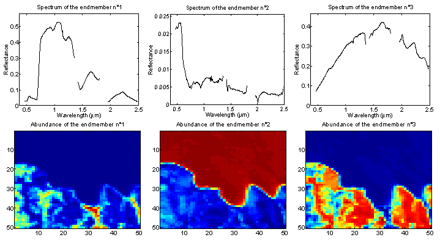

LMM-based supervised and semi-supervised Bayesian algorithms for hyperspectral image unmixing
We propose Bayesian algorithms that can be used for hyperspectral image unmixing.
The model assumes that the pixel reflectances result from linear combinations of known pure component spectra contaminated by an additive Gaussian noise, as formulated by the linear mixing model (LMM). The abundance parameters to be estimated satisfy positivity and additivity constraints. These constraints are naturally expressed in a Bayesian context by using appropriate abundance prior distributions. The posterior distributions of the unknown model parameters are then derived. A Gibbs sampler allows one to draw samples distributed according to the posteriors of interest and to estimate the unknown abundances.
The abundance estimation procedure and the main results are detailed in a paper published in IEEE Trans. Signal Processing in 2008.
- article
 [ .pdf - 1.3Mo ].
[ .pdf - 1.3Mo ].
The corresponding Matlab codes are available below.
- matlab codes
 [ .tar - 110Ko ].
[ .tar - 110Ko ]. - new matlab codes (for analyzing a single pixel using ASCII files) [ .zip - 31Ko ].
Synthetic data
The accuracy of the proposed abundance estimation procedure is illustrated by unmixing a synthetic pixel resulting from the combination of three pure components representative of a urban or suburban environment: construction concrete, green grass and dark yellowish brown micaceous loam. The proportions of these components are 0.3, 0.6 and 0.1 respectively. The observations have been corrupted by an additive Gaussian noise.
You can visualize the posterior distributions of the estimated abundances as functions of the SNR in the video available below.
- mpg file
 [ .mpg - 194Ko ].
[ .mpg - 194Ko ].
Real data: Moffett Field image
The picture above (Fig. 1) was acquired in 1997 over Moffett Field (CA, USA) by the Airborne Visible Infrared Imaging Spectrometer AVIRIS of the JPL laboratory (NASA). After an endmember extraction procedure based on the N-FINDR algorithm, each pixel is unmixed by our algorithm. Then, fraction maps are obtained for the three resulting endmembers (red = 100%, blue = 0%) that are represented in the analyzed portion of the image (Fig. 2).

Fig. 1. Hyperspectral image acquired over Moffett Field (CA, USA). The top of the cube represents the observed scene shown in true colors.

Fig. 2. Top: the R = 3 endmember spectra obtained by the N-FINDR algorithm. Bottom: the fraction maps of the corresponding endmember in the scene (blue (resp. red) means absence (resp. presence) of the material).
Extension to semi-supervised Bayesian unmixing
An extension of the algorithm is also studied for mixtures with an unknown number R of spectral components. We assume here that the endmember spectra belong to a known library. However, the number of components R as well as the corresponding spectra and abundance coefficients are unknown. The previous hierarchical Bayesian model allows to define appropriate prior regarding the new unknown parameters. Finally, a reversible jump MCMC strategy is required for estimating all the unknown parameters (number of components, spectra involved in the mixture and their respective abundance coefficients).
The abundance estimation procedure and the main results are detailed in a paper published in IEEE Trans. Signal Processing in 2008.
- article [ .pdf - 1.3Mo ].
The corresponding Matlab codes are available below.
- matlab codes [ .tar - 110Ko ].
- new matlab codes (for analyzing a single pixel using ASCII files) [ .zip - 35Ko ].